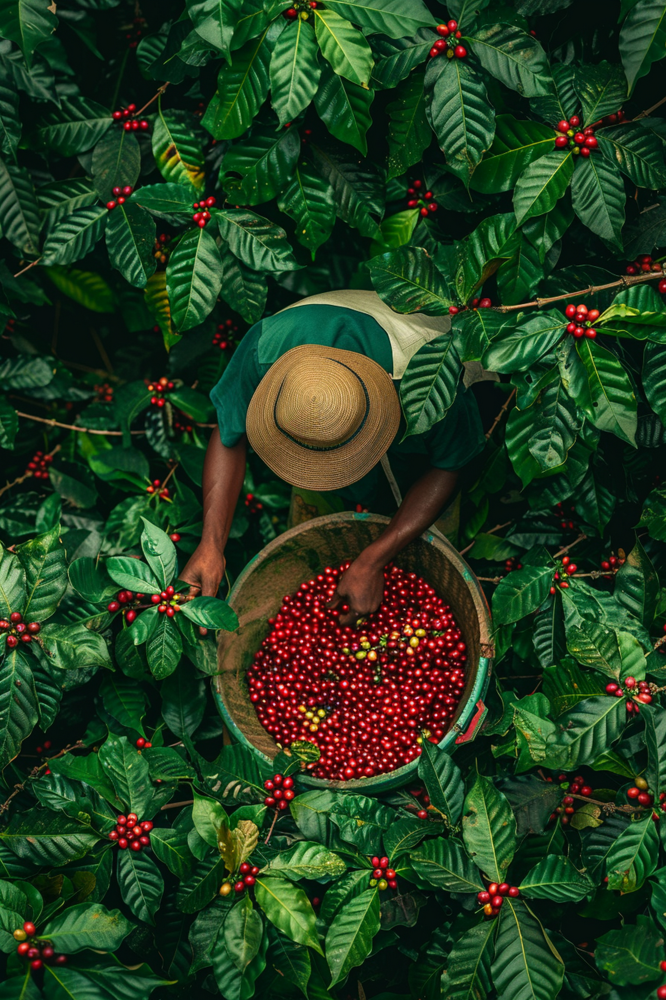
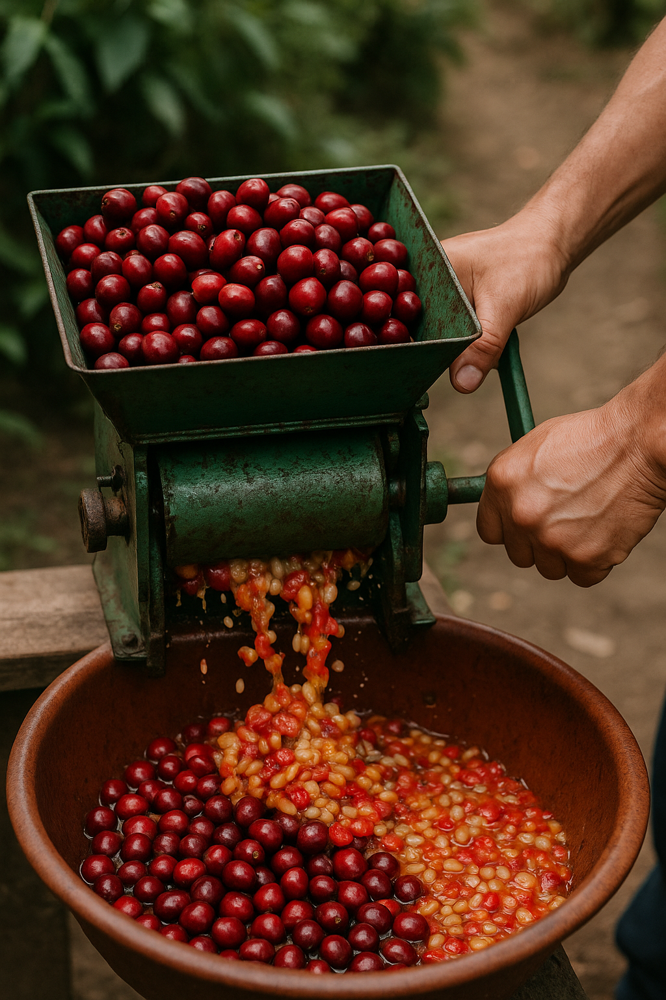
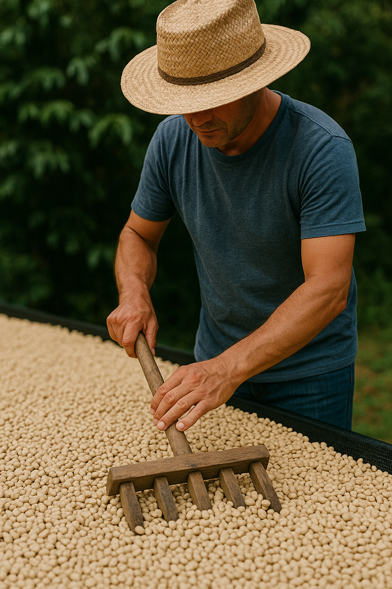
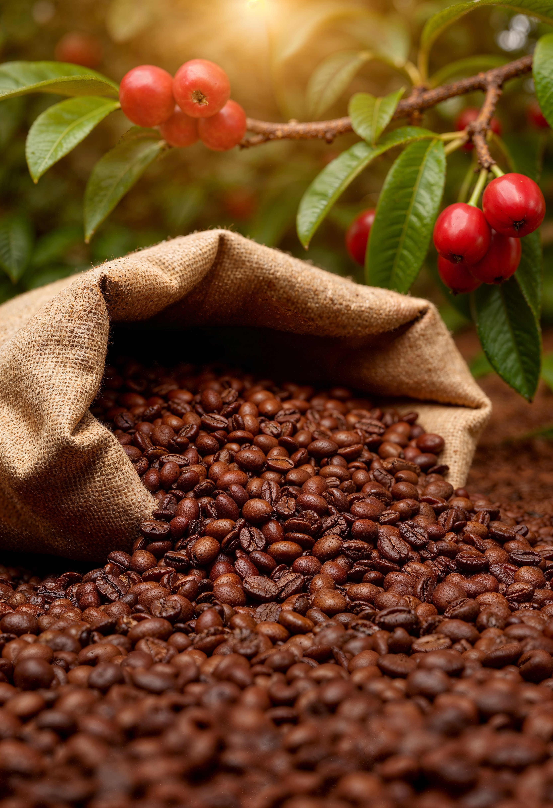

¿Sabías que detrás de cada taza de café hay una historia de esfuerzo, pasión y tradición? La caficultura no solo cultiva granos, ¡cultiva sueños! Desde el amanecer, manos expertas cosechan cada cereza con amor, transformando la tierra en sabor. No es solo café, es cultura, es identidad. Apoyar al caficultor es honrar ese legado. La próxima vez que tomes café, recuerda: estás bebiendo el alma de una montaña.

La recolección de café es manos campesinas eligen solo los granos maduros, uno por uno. No es solo cosechar, es cuidar una tradición que da vida a cada taza.

El despulpado artesanal de café es un acto de amor y tradición. Después de la cosecha, cada cereza madura se despulpa a mano o con máquinas rústicas.

El proceso de lavado y secado del café es clave para lograr una taza perfecta.
